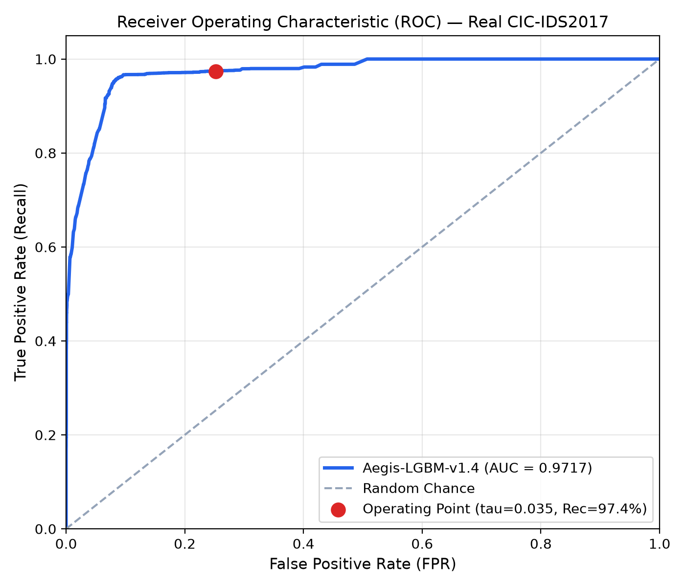

Slide 01 // Problem & Motivation
The Enterprise Intrusion & Line-Rate Crisis
Why traditional signature rules and heavy DPI tools fail against modern encrypted attacks at line speed.
🔒 Payload Opacity
Over 85% of enterprise network traffic is encrypted (TLS 1.3, QUIC, DoH). Deep Packet Inspection (DPI) cannot read payloads without breaking forward secrecy via high-latency SSL termination proxies.
>85%
Encrypted Web & Internal Traffic
⏱ Line-Rate Bottlenecks
Heavy 80+ feature extractors (e.g. CICFlowMeter) buffer packets for up to 25 ms. On multi-gigabit pipes, flow reassembly queues exhaust memory, leading to packet drops and blind spots.
>25 ms
Traditional Feature Buffer Delay
⚠️ Alert Fatigue & Inaction
Conventional ML engines produce binary alerts ("Attack" vs "Benign") without local reasoning or attribution. Overwhelmed SOC teams suffer fatigue, while attackers move laterally uncontained.
0 Actions
Automated Active Containment
Slide 02 // Proposed Solution
AegisNIDS: Two-Layer Autonomous Defense
"AegisNIDS detects network attacks using lightweight ML, determines response severity through a policy engine, contains high-risk traffic in a honeypot, extracts forensic IOCs, and exports standardized STIX 2.1 threat intelligence."
1. Zero-DPI ML
Inspects packet cadence & flow duration across 12 temporal metrics—100% payload independent.
1.98 ms
End-to-End Pipeline
2. Local TreeSHAP
Calculates exact feature attributions directly from tree paths in <0.5 ms for plain-English SOC triage.
<0.5 ms
Native Tree Attribution
3. 3-Tier Policy
Replaces binary switches with graduated control:
ALLOW, MONITOR, and QUARANTINE.
98.87%
Quarantine Precision
4. Decoy & STIX
Diverts attackers to Layer 2 honeypot decoys, harvesting IOCs into official OASIS STIX 2.1 threat bundles.
STIX 2.1
OASIS Conformance Pass
Slide 03 // System Architecture
End-to-End Closed-Loop Pipeline
From raw wire packets to automated SIEM threat sharing without human latency.
[ Raw Network Packets / PCAP Stream ]
│
▼
[ 5-Tuple Flow Reconstruction Engine ] ──── (Canonical keys, 5s timeout, μs tracking)
│
▼
[ 12 Zero-DPI Temporal Feature Extractor ] ─ (Flow Duration, Fwd/Bwd/Flow IAT, Idle)
│
▼
[ Layer 1: Aegis-LGBM Engine ] ──────────── (Calibrated gradient boosted decision trees)
│
┌──────┴────────────────────────┐
▼ ▼
[ Native TreeSHAP Attribution ] [ 3-Tier Policy Engine ]
(Exact local root-cause text) (Calibrated risk score: 0 - 100)
│
┌─────────────────────┼─────────────────────┐
▼ ▼ ▼
[ ALLOW: < 20 ] [ MONITOR: 20-74 ] [ QUARANTINE: >= 75 ]
Normal Egress SOC Watchlist Alert Divert to Layer 2 Decoy
│
▼
[ Forensic Honeypot ]
(Interactive sandbox)
│
▼
[ STIX 2.1 Intel Export ]
🚀 Core Architectural Advantages
• Streaming Flow Synthesis: Operates at wire speed using running Welford accumulators without unbounded packet buffering.
• Asynchronous Decoy Redirection: Malicious connections are gracefully sinkholed to avoid TCP resets that tip off adversaries.
• Closed-Loop Feedback: Quarantined telemetry generates fresh attack profiles for gated continuous retraining.
• Asynchronous Decoy Redirection: Malicious connections are gracefully sinkholed to avoid TCP resets that tip off adversaries.
• Closed-Loop Feedback: Quarantined telemetry generates fresh attack profiles for gated continuous retraining.
352 KB
Model Footprint
>800k
Vector Flows/Sec
Slide 04 // ML Detection Layer
Mathematical Modeling of Packet Cadence
Capturing attack kinematics entirely through 12 zero-DPI inter-arrival metrics.
📊 The 12 Zero-DPI Temporal Features
| Group | Features Tracked |
|---|---|
| Forward Cadence | Fwd IAT Mean, Fwd IAT Std, Fwd IAT Max, Fwd IAT Total |
| Bidirectional | Flow Duration, Flow IAT Mean, Flow IAT Std, Flow IAT Max |
| Backward Response | Bwd IAT Max, Bwd IAT Std |
| Session Inactivity | Idle Mean, Idle Max |
⚡ Rigorous Latency Audit (720 Cycles)
Measured under warm canonical benchmark workloads:
0.20 ms
Feature Extraction (p95: 0.31 ms)
1.21 ms
Model Inference (p95: 2.01 ms)
1.98 ms
Total Pipeline (p95: 3.16 ms)
10/10
Invariant Tests Passed
Slide 05 // Three-Tier Response + Honeypot
Three-Tier Operational Policy & Decoy Containment
Moving from high-stress binary cutoffs to graduated, zero-downtime automated actions.
🟢 ALLOW (P < 0.20)
Egresses straight to internal business applications.
• 96.4% Benign Purity on real network flows.
• Ensures legitimate workflows and users experience zero artificial friction.
• 96.4% Benign Purity on real network flows.
• Ensures legitimate workflows and users experience zero artificial friction.
96.4%
ALLOW Egress Purity
🟡 MONITOR (0.20 ≤ P < 0.75)
Traffic allowed with continuous SOC watchlist logging.
• Captures suspicious burstiness without business interruption.
• Triggers automated MITRE ATT&CK technique mapping.
• Captures suspicious burstiness without business interruption.
• Triggers automated MITRE ATT&CK technique mapping.
80.0%
Watchlist Precision
🔴 QUARANTINE (P ≥ 0.75)
High-confidence threats diverted to Layer 2 decoy.
• 98.87% Quarantine Precision.
• Only 0.66% false quarantine rate on real benign flows.
• Traps attack payloads in interactive decoys.
• 98.87% Quarantine Precision.
• Only 0.66% false quarantine rate on real benign flows.
• Traps attack payloads in interactive decoys.
98.87%
Quarantine Precision
Slide 06 // IOC Extraction & STIX 2.1 Export
Actionable Forensic IOCs & OASIS STIX 2.1
Automating the perimeter-to-threat-exchange intelligence cycle.
🔍 Controlled Honeypot Provenance
Verified with RFC 5737 isolated test traffic (
192.0.2.77):
Traffic Ingress (192.0.2.77)
→ P(Attack) = 74.9% (QUARANTINE)
→ Session Created: HP-SESS-6804
→ Forensic Log: 7 captured interactions
→ IOC Harvested: IOC-005 (DDOS_SYN_FLOOD)
→ STIX 2.1 Indicator: [ipv4-addr:value = '192.0.2.77']
🌐 OASIS STIX 2.1 Conformance Pass
All indicators exported directly into standardized JSON-STIX bundles:
- Strict RFC 4122 v4 UUID identifiers
- ISO-8601 UTC microsecond timestamps
- Valid STIX Pattern Grammar
- 100% Validated via official
python-stix2andstix2patterns - Directly ingestible into Splunk, Elastic, MISP, & OpenCTI
PASS
OASIS Conformance Validation
Slide 07 // SOC Dashboard & Native TreeSHAP
SOC Decision Center & Sub-Millisecond TreeSHAP
Transforming opaque model numbers into decisive, human-readable operational triage.
🖥 React SOC Dashboard
• Real-time Telemetry: Ingestion rates, live flow timeline, active policy tier breakdown.
• PCAP Inspection Tool: Upload and parse PCAP capture files on demand with sub-second turnaround.
• Threat Decision Cards: Real-time mapping to MITRE ATT&CK techniques with severity badges.
• PCAP Inspection Tool: Upload and parse PCAP capture files on demand with sub-second turnaround.
• Threat Decision Cards: Real-time mapping to MITRE ATT&CK techniques with severity badges.
🌳 Sub-Millisecond TreeSHAP Attribution
Calculates exact feature importance values directly from tree nodes in <0.5 ms:
"Flagged primarily due to abnormal Fwd IAT Total (+1.2325) and elevated Fwd IAT Mean (+1.2278) [Direct SYN Flood Cadence]"
Provides instant causal clarity so analysts can confirm or dismiss alerts in seconds.
Slide 08 // Real CIC-IDS2017 Results
Empirical Validation on 20,000 Real Flows
Rigorous benchmark against real Friday & Tuesday enterprise PCAPs.
| Metric | Empirical Value | Operational Meaning |
|---|---|---|
| ROC-AUC | 97.17% | Near-ideal discriminative separation |
| Recall | 97.41% | 9,741 / 10,000 attacks stopped |
| F1-Score | 87.51% | Harmonic balance across all vectors |
| DDoS Detection | 99.97% | 3,499 / 3,500 LOIC floods detected |
| PortScan Detection | 99.89% | 3,496 / 3,500 recon scans detected |
| SSH-Patator | 99.67% | 1,495 / 1,500 SSH brute-force caught |
| False Negatives | 2.59% | Perimeter evasion rate minimized |

Empirical ROC Curve (ROC-AUC = 97.17%) across 20,000 real flows
Slide 09 // Model Comparison & Limitations
Model A vs. Model B & Scientific Limitations
Comparative evaluation on Tuesday Patator authentication brute force.
| Dimension | Model A (12 Feat) | Model B (24 Feat) | Gain / Delta |
|---|---|---|---|
| Feature Space | Temporal Only | Temporal + Port + Flags | +12 transport features |
| F1-Score | 88.37% | 99.86% | +11.49% |
| Precision | 79.28% | 99.71% | Eliminates LAN noise |
| FPR | 18.05% | 0.20% | 90x false alarm drop |
| FTP Recall | 82.41% | 99.98% | Resolves timing blind spot |
| Latency Delta | 1.154 ms | 1.171 ms | Only +17 μs latency |
🔬 Documented Research Limitations
1. Cross-Attack Cadence Divergence:
Models trained exclusively on volumetric floods achieve only 21.4% zero-shot recall on brute force due to different timing physics. Multi-vector training is mathematically essential.
2. CSE-CIC-IDS2018 Label Status:
Parquet file exists locally (39,940 flows) but lacks ground-truth labels. Explicitly audited and classified as
Models trained exclusively on volumetric floods achieve only 21.4% zero-shot recall on brute force due to different timing physics. Multi-vector training is mathematically essential.
2. CSE-CIC-IDS2018 Label Status:
Parquet file exists locally (39,940 flows) but lacks ground-truth labels. Explicitly audited and classified as
AVAILABLE, NOT VALIDATED to ensure strict scientific honesty.
Slide 10 // Conclusion & Future Work
Conclusion & Operational Impact
"AegisNIDS proves that zero-DPI temporal features provide enterprise-grade detection (97.17% ROC-AUC) while eliminating TLS decryption overhead and enabling automated, zero-touch forensic containment."
🛡 Complete Closed Loop
Demonstrated a fully functional pipeline from raw network flows to calibrated response, interactive honeypots, and OASIS STIX 2.1 intelligence sharing.
⚡ Line-Rate Feasibility
With 1.98 ms median pipeline latency and 352 KB memory footprint, AegisNIDS fits seamlessly into edge gateways and DMZ perimeter appliances.
🔮 Future Horizons
• Kernel-space eBPF/XDP bypass for 10+ Gbps line rate.
• Self-supervised flow representation learning across enterprise environments.
• Automated policy threshold adaptation.
• Self-supervised flow representation learning across enterprise environments.
• Automated policy threshold adaptation.